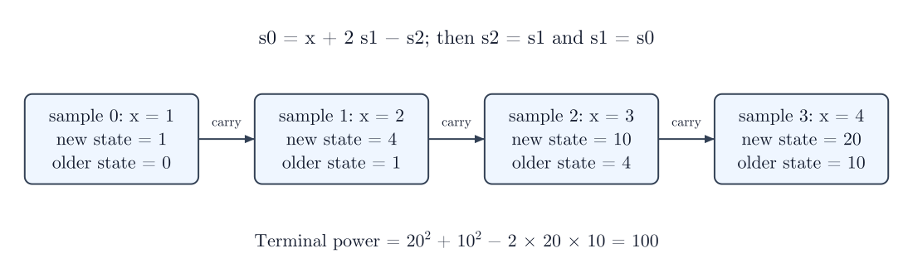
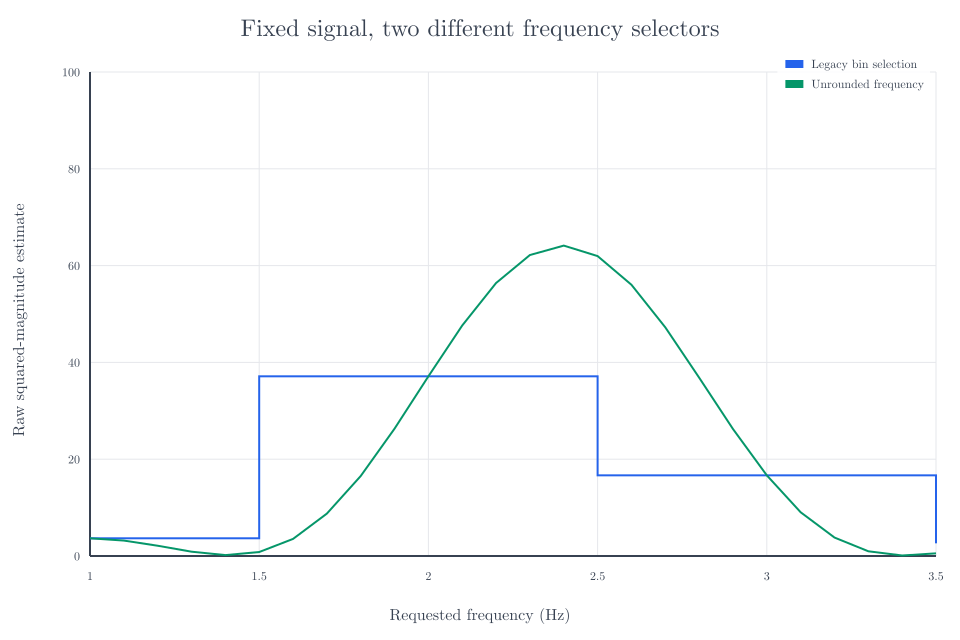
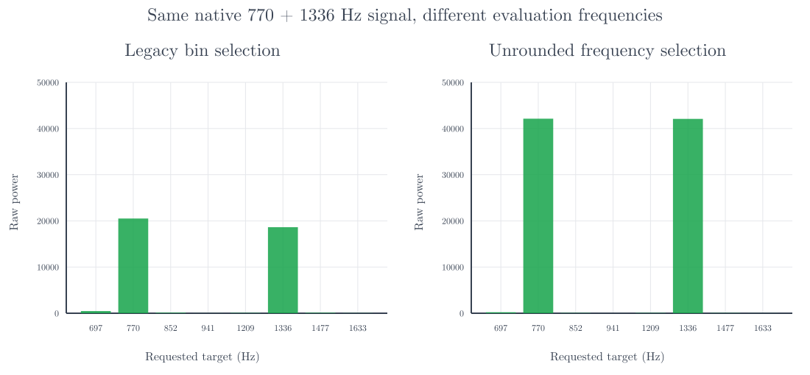
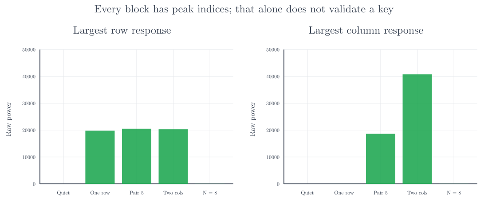
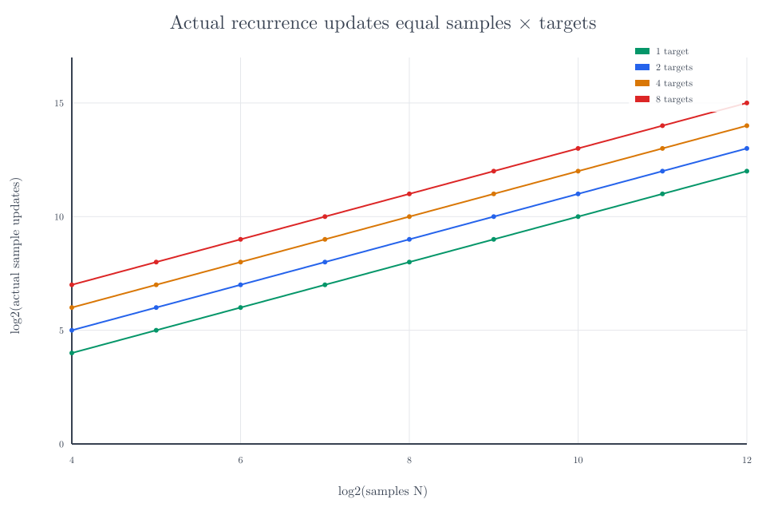
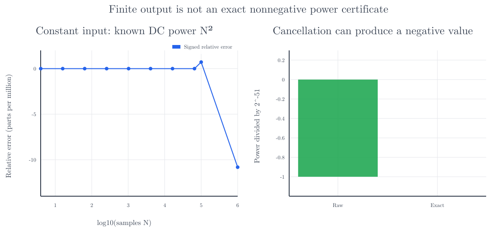
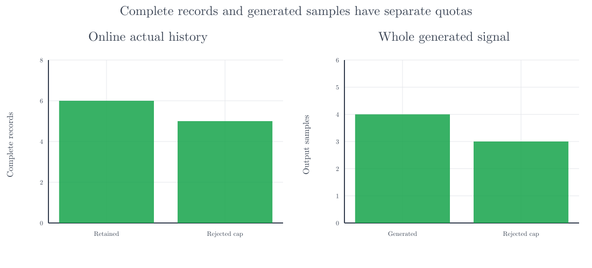

Goertzel Power: Actual States, Selected Frequencies and Numerical Limits
Abstract
Given a finite real signal, measure its Fourier response at one or a few chosen frequencies without storing a full transform. A two-state recurrence provides that estimate, but selecting the right frequency and interpreting its output still matter. This report follows four samples by hand, distinguishes historical bin snapping from direct frequency evaluation, and reproduces the original 770+1336 Hz keypad illustration through native signal helpers. It also retains quiet and incomplete-tone counterexamples, measured work and finite cancellation errors. A maximum-response keypad candidate is not presented as a validated receiver.
Four samples and two carried states
Let x=[1,2,3,4], N=4 and k=0. The angular frequency is zero and the coefficient c=2cos(0)=2. Starting with both states zero, the new states are 1,4,10,20. The final two are 20 and 10, so the raw power is 400+100−400=100, matching (1+2+3+4)². The following records come from the executing native recurrence.
#include <dm/dm.hpp>
namespace dm=datamunge;
int main(){
std::filesystem::create_directories("build");
const auto t=dm::algorithms::goertzel_bin_trace({1,2,3,4},0);
std::print("| sample | input | before s1 | before s2 | evaluated s0 |\n| ---: | ---: | ---: | ---: | ---: |\n");
std::vector<dm::algorithms::GoertzelEvent> updates;
for(const auto& e:t.events)if(e.kind==dm::algorithms::GoertzelEventKind::sample){
updates.push_back(e);std::print("| {} | {:.0f} | {:.0f} | {:.0f} | {:.0f} |\n",e.index,e.input,e.before_s1,e.before_s2,e.value);
}
std::print("\nCoefficient {:.1f}; final states {:.1f}, {:.1f}; raw power {:.1f}; updates {}; complete records {}. Bin 1 on the same samples returns {:.12f}.\n",t.run.coefficient,t.run.s1,t.run.s2,t.run.power,t.run.sample_updates,t.events.size(),dm::algorithms::goertzel_power_bin({1,2,3,4},1));
dm::graphics::Diagram d(62,1100);dm::graphics::DiagramNodeStyle box;box.width=3.4;box.height=1.6;box.font_size=22;
for(std::size_t i=0;i<updates.size();++i){const auto& e=updates[i];const double x=4.5*double(i);
d.node(std::format("s{}",i),{x,0},std::format("sample {}: x = {:.0f}\nnew state = {:.0f}\nolder state = {:.0f}",e.index,e.input,e.value,e.before_s1),box);
if(i)d.edge(std::format("s{}",i-1),std::format("s{}",i),"carry");
}
d.text({6.75,2},"s0 = x + 2 s1 − s2; then s2 = s1 and s1 = s0",24)
.text({6.75,-2},std::format("Terminal power = {:.0f}² + {:.0f}² − 2 × {:.0f} × {:.0f} = {:.0f}",t.run.s1,t.run.s2,t.run.s1,t.run.s2,t.run.power),22)
.save_svg("build/goertzel_states.svg");
if(t.run.power!=100||t.events.size()!=6)throw std::runtime_error("four-sample recurrence");
}| sample | input | before s1 | before s2 | evaluated s0 |
|---|---|---|---|---|
| 0 | 1 | 0 | 0 | 1 |
| 1 | 2 | 1 | 0 | 4 |
| 2 | 3 | 4 | 1 | 10 |
| 3 | 4 | 10 | 4 | 20 |
Coefficient 2.0; final states 20.0, 10.0; raw power 100.0; updates 4; complete records 6. Bin 1 on the same samples returns 8.000000000000.

For a fixed angular frequency ω, the recurrence and its initial conditions are
Define q_n=s_n−exp(−iω)s_{n−1}. Substitution gives q_n=x_n+exp(iω)q_{n−1}. Expanding this first-order relation over the finite block shows that q differs from the Fourier sum only by a unit-magnitude phase:
In the terminal expression, s1 and s2 name the implementation's newest and older states, rather than sample indices. The derivation is exact arithmetic; its floating evaluation can lose precision and even produce a finite negative value. The output is an unnormalized squared magnitude, not mean-square signal power, a power spectral density or calibrated watts.
The algorithm dates to [Goertzel (1958)](https://doi.org/10.2307/2310304). [Chen’s TI SPRA066 report](https://www.ti.com/lit/an/spra066/spra066.pdf), equations 1–4, describes the bin selection, real recurrence and magnitude-based DTMF use. Its fixed-point DSP implementation differs from this double-valued library. The programs here expose actual states, not a reconstructed recurrence.
A requested frequency and a selected bin can differ
The original goertzel_power(x,f,fs) retains its historical rule:
For ordinary nonnegative requests this snaps to the nearest bin, with upward
half ties. Negative requests are asymmetric because truncation is towards zero;
it is not the same rule as rounding a signed number to the nearest integer.
GoertzelFrequencyMode::unrounded instead uses ω=2πf/fs. That avoids integer
quantization but does not make the floating arithmetic exact.
Hold a 16-sample, 16 Hz-rate signal containing a 2.4 Hz sinusoid fixed. Compare both selectors over requested frequencies. The nearly coincident query points immediately before the half-bin boundaries make the snapping steps visible.
#include <dm/dm.hpp>
namespace dm=datamunge;
int main(){
std::filesystem::create_directories("build");
const auto x=dm::algorithms::sinusoid_signal(16,16,{{2.4,1,0}});
std::vector<double> query;
for(int j=0;j<=25;++j)query.push_back(1+double(j)/10);
for(double edge:{1.5,2.5,3.5})query.push_back(std::nextafter(edge,0.));
std::sort(query.begin(),query.end());
std::vector<double> snapped,direct;
std::print("| requested Hz | selected bin | snapped raw power | unrounded raw power |\n| ---: | ---: | ---: | ---: |\n");
for(double f:query){const auto a=dm::algorithms::goertzel_run(x,f,16);const auto b=dm::algorithms::goertzel_run(x,f,16,dm::algorithms::GoertzelFrequencyMode::unrounded);
snapped.push_back(a.power);direct.push_back(b.power);std::print("| {:.17g} | {} | {:.9f} | {:.9f} |\n",f,a.selected_bin,a.power,b.power);
}
const auto negative=dm::algorithms::goertzel_run({1,2,3,4},-1,4);
std::print("\nLegacy request -1 Hz at N=4, fs=4 selects bin {}; raw power {:.1f}. Unrounded -1 Hz gives {:.12f}.\n",negative.selected_bin,negative.power,dm::algorithms::goertzel_power_at_frequency({1,2,3,4},-1,4));
auto p=dm::graphics::RPlot::create();
p.line(query,snapped,"snapped",{37,99,235},2).line(query,direct,"unrounded",{5,150,105},2)
.legend({"Legacy bin selection","Unrounded frequency"},{{37,99,235},{5,150,105}})
.title("Fixed signal, two different frequency selectors").xlab("Requested frequency (Hz)").ylab("Raw squared-magnitude estimate")
.x_limits(1,3.5).y_limits(0,100).save_svg("build/goertzel_selection.svg");
}| requested Hz | selected bin | snapped raw power | unrounded raw power |
|---|---|---|---|
| 1 | 1 | 3.659029971 | 3.659029971 |
| 1.1000000000000001 | 1 | 3.659029971 | 3.187807320 |
| 1.2 | 1 | 3.659029971 | 2.121040518 |
| 1.3 | 1 | 3.659029971 | 0.890626526 |
| 1.3999999999999999 | 1 | 3.659029971 | 0.187453157 |
| 1.4999999999999998 | 1 | 3.659029971 | 0.822173517 |
| 1.5 | 2 | 37.124893828 | 0.822173517 |
| 1.6000000000000001 | 2 | 37.124893828 | 3.529494395 |
| 1.7 | 2 | 37.124893828 | 8.762317347 |
| 1.8 | 2 | 37.124893828 | 16.528363093 |
| 1.8999999999999999 | 2 | 37.124893828 | 26.314552395 |
| 2 | 2 | 37.124893828 | 37.124893828 |
| 2.1000000000000001 | 2 | 37.124893828 | 47.630701342 |
| 2.2000000000000002 | 2 | 37.124893828 | 56.404431974 |
| 2.2999999999999998 | 2 | 37.124893828 | 62.187344210 |
| 2.3999999999999999 | 2 | 37.124893828 | 64.131966011 |
| 2.4999999999999996 | 2 | 37.124893828 | 61.965424874 |
| 2.5 | 3 | 16.665232192 | 61.965424874 |
| 2.6000000000000001 | 3 | 16.665232192 | 56.037772646 |
| 2.7000000000000002 | 3 | 16.665232192 | 47.245978457 |
| 2.7999999999999998 | 3 | 16.665232192 | 36.852625443 |
| 2.8999999999999999 | 3 | 16.665232192 | 26.241554378 |
| 3 | 3 | 16.665232192 | 16.665232192 |
| 3.1000000000000001 | 3 | 16.665232192 | 9.037800811 |
| 3.2000000000000002 | 3 | 16.665232192 | 3.814327780 |
| 3.2999999999999998 | 3 | 16.665232192 | 0.974598517 |
| 3.3999999999999999 | 3 | 16.665232192 | 0.104729428 |
| 3.4999999999999996 | 3 | 16.665232192 | 0.548224859 |
| 3.5 | 4 | 2.618033989 | 0.548224859 |
Legacy request -1 Hz at N=4, fs=4 selects bin 0; raw power 100.0. Unrounded -1 Hz gives 8.000000000000.

Finite-block response at an unrounded frequency is a finite Fourier sum, not necessarily an integer DFT bin. For real samples, its ideal power is symmetric in frequency. The historical signed selector can break that symmetry by choosing a different integer; the example above makes this visible without changing the old API's defined finite behavior.
Reproduce the original keypad illustration
A DTMF key combines one row frequency with one column frequency. The grid is specified by [ITU-T Q.23 (11/1988), Section 6 and Figure 1](https://www.itu.int/rec/T-REC-Q.23-198811-I/en). The native generator uses that shared grid: key '5' is 770+1336 Hz, with both amplitudes one and both phases zero. N=410 at fs=8000 gives 51.25 ms, a chosen illustration length rather than a universal standard block.
The legacy mode requests 770 Hz but selects bin 39, about 760.98 Hz; its 1336 Hz request selects bin 68, about 1326.83 Hz. The table prints that mapping as well as the alternative unrounded response. The original eight legacy powers and candidate are preserved; the two selectors need not produce equal powers.
#include <dm/dm.hpp>
namespace dm=datamunge;
int main(){
std::filesystem::create_directories("build");
const auto x=dm::algorithms::dtmf_signal('5',410);
const auto legacy=dm::algorithms::dtmf_peaks(x),direct=dm::algorithms::dtmf_peaks(x,8000,dm::algorithms::GoertzelFrequencyMode::unrounded);
std::vector<double> a,b;std::vector<std::string> labels;
std::print("| group | requested Hz | selected bin | selected Hz | legacy raw power | unrounded raw power |\n| --- | ---: | ---: | ---: | ---: | ---: |\n");
for(std::size_t i=0;i<8;++i){const auto& r=legacy.responses[i];a.push_back(r.power);b.push_back(direct.responses[i].power);labels.push_back(std::format("{:.0f}",legacy.target_hz[i]));
std::print("| {} | {:.0f} | {} | {:.9f} | {:.9f} | {:.9f} |\n",i<4?"Row":"Column",legacy.target_hz[i],r.selected_bin,double(r.selected_bin)*8000/x.size(),r.power,direct.responses[i].power);
}
std::print("\nLegacy peak row {:.0f} Hz, column {:.0f} Hz; candidate {}. Unrounded candidate {}. Actual updates per eight-response evaluation {}; samples {}; duration {:.2f} ms.\n",legacy.target_hz[legacy.row],legacy.target_hz[4+legacy.column],legacy.candidate,direct.candidate,legacy.sample_updates,x.size(),1000.*x.size()/8000);
auto p=dm::graphics::RPlot::barplot(a,labels),q=dm::graphics::RPlot::barplot(b,labels);
p.title("Legacy bin selection").xlab("Requested target (Hz)").ylab("Raw power").y_limits(0,50000);
q.title("Unrounded frequency selection").xlab("Requested target (Hz)").ylab("Raw power").y_limits(0,50000);
dm::graphics::RLayout::create(1,2).add(p).add(q).size(1100,510).title("Same native 770 + 1336 Hz signal, different evaluation frequencies").fit_panels().save_svg("build/goertzel_dtmf.svg");
if(legacy.candidate!='5'||direct.candidate!='5'||legacy.sample_updates!=3280)throw std::runtime_error("original candidate");
}| group | requested Hz | selected bin | selected Hz | legacy raw power | unrounded raw power |
|---|---|---|---|---|---|
| Row | 697 | 36 | 702.439024390 | 469.787511886 | 213.484547788 |
| Row | 770 | 39 | 760.975609756 | 20512.689452202 | 42132.500629326 |
| Row | 852 | 44 | 858.536585366 | 116.611731238 | 54.472422565 |
| Row | 941 | 48 | 936.585365854 | 13.329808439 | 4.782305822 |
| Column | 1209 | 62 | 1209.756097561 | 60.645546129 | 59.761623335 |
| Column | 1336 | 68 | 1326.829268293 | 18635.111216880 | 42090.767397615 |
| Column | 1477 | 76 | 1482.926829268 | 98.265854593 | 46.932173086 |
| Column | 1633 | 84 | 1639.024390244 | 27.184292980 | 12.276515451 |
Legacy peak row 770 Hz, column 1336 Hz; candidate 5. Unrounded candidate 5. Actual updates per eight-response evaluation 3280; samples 410; duration 51.25 ms.

A peak intersection is only a candidate
The native dtmf_peaks() helper finds the first maximum in each four-frequency
group. It does not test whether an adequate tone exists in both groups. Silence
therefore yields candidate '1' by ties. A single row tone, a signal containing
two column tones, or a block too short to separate the grid also yields some
candidate. Displaying that character does not validate the signal.
[ITU-T Q.24 (11/1988), Section 2](https://www.itu.int/rec/T-REC-Q.24-198811-I/en) identifies reception parameters beyond a maximum search, including simultaneous group presence, frequency tolerances, levels and timing. Chen’s SPRA066 likewise assumes prior tone and timing validation and explicitly describes its detector as incomplete. The following are controlled counterexamples, not conformance tests.
#include <dm/dm.hpp>
namespace dm=datamunge;
int main(){
std::filesystem::create_directories("build");
const std::vector<std::string> labels{"Quiet","One row","Pair 5","Two cols","N = 8"};
const std::vector<std::vector<double>> signals{std::vector<double>(410,0),dm::algorithms::sinusoid_signal(410,8000,{{770,1,0}}),dm::algorithms::dtmf_signal('5',410),dm::algorithms::sinusoid_signal(410,8000,{{770,1,0},{1209,1,0},{1477,1,0}}),dm::algorithms::dtmf_signal('5',8)};
std::vector<double> row,col;
std::print("| signal | samples | candidate | chosen row Hz | chosen column Hz | row peak | column peak |\n| --- | ---: | --- | ---: | ---: | ---: | ---: |\n");
for(std::size_t i=0;i<signals.size();++i){const auto p=dm::algorithms::dtmf_peaks(signals[i]);
row.push_back(p.responses[p.row].power);col.push_back(p.responses[4+p.column].power);
std::print("| {} | {} | {} | {:.0f} | {:.0f} | {:.9f} | {:.9f} |\n",labels[i],signals[i].size(),p.candidate,p.target_hz[p.row],p.target_hz[4+p.column],row.back(),col.back());
}
auto a=dm::graphics::RPlot::barplot(row,labels),b=dm::graphics::RPlot::barplot(col,labels);
a.title("Largest row response").xlab("").ylab("Raw power").y_limits(0,50000);
b.title("Largest column response").xlab("").ylab("Raw power").y_limits(0,50000);
dm::graphics::RLayout::create(1,2).add(a).add(b).size(1100,500).title("Every block has peak indices; that alone does not validate a key").fit_panels().save_svg("build/goertzel_candidates.svg");
if(dm::algorithms::dtmf_peaks(signals[0]).candidate!='1')throw std::runtime_error("silence tie");
}| signal | samples | candidate | chosen row Hz | chosen column Hz | row peak | column peak |
|---|---|---|---|---|---|---|
| Quiet | 410 | 1 | 697 | 1209 | 0.000000000 | 0.000000000 |
| One row | 410 | 4 | 770 | 1209 | 19795.990454356 | 6.121527187 |
| Pair 5 | 410 | 5 | 770 | 1336 | 20512.689452202 | 18635.111216880 |
| Two cols | 410 | 4 | 770 | 1209 | 20350.012759852 | 40754.227119160 |
| N = 8 | 8 | 1 | 697 | 1209 | 21.253902461 | 21.253902461 |

Count selected updates, not hardware time
Each target uses N recurrence updates and constant working state. M independent targets use MN updates, plus sample validation, target selection, trigonometric setup and terminal evaluation. The source recurrence has one product, an addition and a subtraction per sample; compiler contraction and machine instructions are not measured by the update counter.
A complete FFT has a different operation mix and produces an entire spectrum. O(MN) versus O(N log N) describes scaling, not an exact timing crossover at M=log N and not a proof that eight Goertzel passes are always faster. The experiment below counts actual updates from repeated native calls. Input storage and retained trace records are separate from ordinary constant working state.
#include <dm/dm.hpp>
namespace dm=datamunge;
int main(){
std::filesystem::create_directories("build");
const auto grid=dm::algorithms::dtmf_peaks({});
std::vector<double> x;std::vector<std::vector<double>> y(4);
std::print("| samples N | targets M | predicted updates | actual updates |\n| ---: | ---: | ---: | ---: |\n");
for(std::size_t n:{16u,32u,64u,128u,256u,512u,1024u,2048u,4096u}){
const auto signal=dm::algorithms::dtmf_signal('5',n);x.push_back(std::log2(double(n)));
for(std::size_t j=0;j<4;++j){const std::size_t m=std::size_t{1}<<j;std::size_t updates=0;
for(std::size_t i=0;i<m;++i)updates+=dm::algorithms::goertzel_run(signal,grid.target_hz[i],8000).sample_updates;
std::print("| {} | {} | {} | {} |\n",n,m,n*m,updates);y[j].push_back(std::log2(double(updates)));
if(updates!=n*m)throw std::runtime_error("actual update count");
}
}
auto p=dm::graphics::RPlot::create();
p.line(x,y[0],"1",{5,150,105},2).points(x,y[0],"1",{5,150,105},3)
.line(x,y[1],"2",{37,99,235},2).points(x,y[1],"2",{37,99,235},3)
.line(x,y[2],"4",{217,119,6},2).points(x,y[2],"4",{217,119,6},3)
.line(x,y[3],"8",{220,38,38},2).points(x,y[3],"8",{220,38,38},3)
.legend({"1 target","2 targets","4 targets","8 targets"},{{5,150,105},{37,99,235},{217,119,6},{220,38,38}})
.title("Actual recurrence updates equal samples × targets").xlab("log2(samples N)").ylab("log2(actual sample updates)")
.x_limits(4,12).y_limits(0,17).save_svg("build/goertzel_work.svg");
}| samples N | targets M | predicted updates | actual updates |
|---|---|---|---|
| 16 | 1 | 16 | 16 |
| 16 | 2 | 32 | 32 |
| 16 | 4 | 64 | 64 |
| 16 | 8 | 128 | 128 |
| 32 | 1 | 32 | 32 |
| 32 | 2 | 64 | 64 |
| 32 | 4 | 128 | 128 |
| 32 | 8 | 256 | 256 |
| 64 | 1 | 64 | 64 |
| 64 | 2 | 128 | 128 |
| 64 | 4 | 256 | 256 |
| 64 | 8 | 512 | 512 |
| 128 | 1 | 128 | 128 |
| 128 | 2 | 256 | 256 |
| 128 | 4 | 512 | 512 |
| 128 | 8 | 1024 | 1024 |
| 256 | 1 | 256 | 256 |
| 256 | 2 | 512 | 512 |
| 256 | 4 | 1024 | 1024 |
| 256 | 8 | 2048 | 2048 |
| 512 | 1 | 512 | 512 |
| 512 | 2 | 1024 | 1024 |
| 512 | 4 | 2048 | 2048 |
| 512 | 8 | 4096 | 4096 |
| 1024 | 1 | 1024 | 1024 |
| 1024 | 2 | 2048 | 2048 |
| 1024 | 4 | 4096 | 4096 |
| 1024 | 8 | 8192 | 8192 |
| 2048 | 1 | 2048 | 2048 |
| 2048 | 2 | 4096 | 4096 |
| 2048 | 4 | 8192 | 8192 |
| 2048 | 8 | 16384 | 16384 |
| 4096 | 1 | 4096 | 4096 |
| 4096 | 2 | 8192 | 8192 |
| 4096 | 4 | 16384 | 16384 |
| 4096 | 8 | 32768 | 32768 |

Finite arithmetic still has numerical limits
The exact squared magnitude is nonnegative, but its ordered terminal expression subtracts large nearby quantities. The following two stored samples have an exact DC sum of 2-52, so their exact DC power is 2-104. The retained raw expression returns −2^-51. The core exposes that finite result instead of silently clamping it. Constant signals provide another independent answer: N ones have exact DC power N².
The large-bin example also distinguishes ideal integer DFT periodicity from floating evaluation of an unreduced angle. The size_t maximum is congruent to bin 3 modulo four; [1,2,3,4] has ideal power 8 there. Converting that large integer to double and evaluating its huge angle can give a different raw result. The old unsigned-bin semantics remain explicit rather than silently reducing the index.
#include <dm/dm.hpp>
namespace dm=datamunge;
int main(){
std::filesystem::create_directories("build");
const std::vector<double> pair{0x1.59497b6052b08p+0,-0x1.59497b6052b07p+0};
const double raw=dm::algorithms::goertzel_power_bin(pair,0),exact=(pair[0]+pair[1])*(pair[0]+pair[1]);
std::print("Near-cancelling pair: raw {:.17e}; exact DC power {:.17e}; exact sum {:.17e}.\n",raw,exact,pair[0]+pair[1]);
std::vector<double> sizes,errors;
std::print("\n| DC samples N | returned raw power | exact N squared | signed relative error percent |\n| ---: | ---: | ---: | ---: |\n");
for(std::size_t n:{4u,16u,64u,256u,1024u,4096u,16384u,65536u,100000u,1000000u}){
const auto r=dm::algorithms::goertzel_bin_run(std::vector<double>(n,1),0);const double truth=double(n)*double(n),error=100*(r.power/truth-1);
std::print("| {} | {:.0f} | {:.0f} | {:.12f} |\n",n,r.power,truth,error);sizes.push_back(std::log10(double(n)));errors.push_back(10000*error);
}
const auto large=dm::algorithms::goertzel_bin_run({1,2,3,4},std::numeric_limits<std::size_t>::max());
std::print("\nUnreduced bin {}; ideal four-sample alias {}; raw power {:.12f}; ideal alias power 8.\n",large.bin,large.bin%4,large.power);
auto a=dm::graphics::RPlot::create();
a.line(sizes,errors,"error",{37,99,235},2).points(sizes,errors,"error",{37,99,235},4)
.legend({"Signed relative error"},{{37,99,235}}).title("Constant input: known DC power N²")
.xlab("log10(samples N)").ylab("Relative error (parts per million)").x_limits(.6,6).y_limits(-14,2);
auto b=dm::graphics::RPlot::barplot({raw/std::ldexp(1.,-51),exact/std::ldexp(1.,-51)},{"Raw","Exact"});
b.title("Cancellation can produce a negative value").xlab("").ylab("Power divided by 2^-51").y_limits(-1.2,.3);
dm::graphics::RLayout::create(1,2).add(a).add(b).size(1100,520).title("Finite output is not an exact nonnegative power certificate").fit_panels().save_svg("build/goertzel_numeric.svg");
if(raw!=-0x1p-51||exact!=0x1p-104)throw std::runtime_error("finite cancellation witness");
}Near-cancelling pair: raw -4.44089209850062616e-16; exact DC power 4.93038065763132378e-32; exact sum 2.22044604925031308e-16.
| DC samples N | returned raw power | exact N squared | signed relative error percent |
|---|---|---|---|
| 4 | 16 | 16 | 0.000000000000 |
| 16 | 256 | 256 | 0.000000000000 |
| 64 | 4096 | 4096 | 0.000000000000 |
| 256 | 65536 | 65536 | 0.000000000000 |
| 1024 | 1048576 | 1048576 | 0.000000000000 |
| 4096 | 16777216 | 16777216 | 0.000000000000 |
| 16384 | 268435456 | 268435456 | 0.000000000000 |
| 65536 | 4294967296 | 4294967296 | 0.000000000000 |
| 100000 | 10000007168 | 10000000000 | 0.000071680000 |
| 1000000 | 999989182464 | 1000000000000 | -0.001081753600 |
Unreduced bin 18446744073709551615; ideal four-sample alias 3; raw power 11.021038813124; ideal alias power 8.

Nonfinite samples, invalid rates, unsafe legacy integer conversions and evaluated nonfinite states or terminal outputs are rejected. These checks prevent invalid values from propagating; they do not certify the accuracy of finite results. Empty input returns zero after parameter validation, with no coefficient evaluated. This is finite-block processing, not an automatically sliding transform or an infinite-duration streaming receiver.
Bound complete histories and whole generated signals separately
Trace quotas count complete initial, sample and stop records online. N=4 therefore needs six records, and empty input needs two metadata records. The optional quota is checked before each whole append; zero disables the quota while still recording. No numerical replay, truncated history or partial result is returned.
Input/root/ordinary result and selection metadata/constant working states/ allocator overhead are excluded. A record quota is not numeric entries, bytes or peak RAM. Signal generation instead admits its whole output sample count before allocation, after validating all descriptors. Both units differ from recurrence updates, despite similarly named numeric limits.
#include <dm/dm.hpp>
namespace dm=datamunge;
int main(){
std::filesystem::create_directories("build");
const std::vector<double> x{1,2,3,4};const auto original=x;
bool record_rejected=false,empty_rejected=false,signal_rejected=false,invalid_before_quota=false,conversion_rejected=false,overflow_rejected=false;
try{(void)dm::algorithms::goertzel_bin_trace(x,0,5);}catch(const std::length_error&){record_rejected=true;}
const auto t=dm::algorithms::goertzel_bin_trace(x,0,6);
try{(void)dm::algorithms::goertzel_bin_trace({},0,1);}catch(const std::length_error&){empty_rejected=true;}
const auto empty=dm::algorithms::goertzel_bin_trace({},0,2);
try{(void)dm::algorithms::sinusoid_signal(4,8,{{1,1,0}},3);}catch(const std::length_error&){signal_rejected=true;}
const auto signal=dm::algorithms::sinusoid_signal(4,8,{{1,1,0}},4);
try{(void)dm::algorithms::goertzel_bin_trace({1,2,std::numeric_limits<double>::quiet_NaN()},0,1);}catch(const std::invalid_argument&){invalid_before_quota=true;}
try{(void)dm::algorithms::goertzel_power({1,2},1e300,1);}catch(const std::overflow_error&){conversion_rejected=true;}
try{(void)dm::algorithms::goertzel_power_bin({1e308,1e308},0);}catch(const std::overflow_error&){overflow_rejected=true;}
auto copy=t;copy.events[1].value=999;
std::print("| resource | retained amount | rejected limit | rejected |\n| --- | ---: | ---: | --- |\n| Four-sample complete history | {} | 5 | {} |\n| Empty initial and stop metadata | {} | 1 | {} |\n| Whole generated signal | {} | 3 | {} |\n",t.events.size(),record_rejected,empty.events.size(),empty_rejected,signal.size(),signal_rejected);
std::print("\nZero optional history quota retains {} records; zero optional signal quota generates {} samples. Independent owned copy {}; invalid last sample before quota {}; unsafe bin conversion rejected {}; nonfinite state rejected {}; caller input unchanged {}.\n",dm::algorithms::goertzel_bin_trace(x,0,0).events.size(),dm::algorithms::sinusoid_signal(4,8,{{1,1,0}},0).size(),t.events[1].value!=copy.events[1].value,invalid_before_quota,conversion_rejected,overflow_rejected,x==original);
auto a=dm::graphics::RPlot::barplot({double(t.events.size()),5.},{"Retained","Rejected cap"});
a.title("Online actual history").xlab("").ylab("Complete records").y_limits(0,8);
auto b=dm::graphics::RPlot::barplot({double(signal.size()),3.},{"Generated","Rejected cap"});
b.title("Whole generated signal").xlab("").ylab("Output samples").y_limits(0,6);
dm::graphics::RLayout::create(1,2).add(a).add(b).size(1100,500).title("Complete records and generated samples have separate quotas").fit_panels().save_svg("build/goertzel_controls.svg");
if(!record_rejected||!empty_rejected||!signal_rejected||!invalid_before_quota||!conversion_rejected||!overflow_rejected)throw std::runtime_error("resource/domain controls");
}| resource | retained amount | rejected limit | rejected |
|---|---|---|---|
| Four-sample complete history | 6 | 5 | true |
| Empty initial and stop metadata | 2 | 1 | true |
| Whole generated signal | 4 | 3 | true |
Zero optional history quota retains 6 records; zero optional signal quota generates 4 samples. Independent owned copy true; invalid last sample before quota true; unsafe bin conversion rejected true; nonfinite state rejected true; caller input unchanged true.

What the checks establish
A four-sample calculation explains the states and terminal formula. The selected bin table prevents requested frequencies from being mistaken for evaluated ones. The original controlled keypad signal remains reproducible through native helpers, while quiet and incomplete signals expose the limits of a maximum-response rule. Known DC powers, exact direct-Fourier development fixtures and independent complex sums check numerical behavior without using the recurrence as its own oracle.
No external dataset is needed here: controlled signals provide known frequencies, amplitudes and deliberately incomplete cases. The shared kernel retains the old finite results and exposes its actual work and state history. Its checked inputs and resource bounds complement, rather than replace, the stated finite-precision and candidate-selection limits.